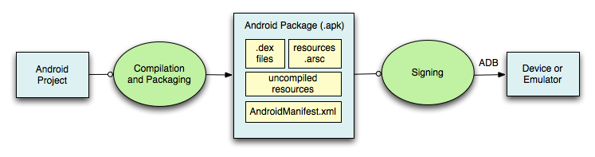
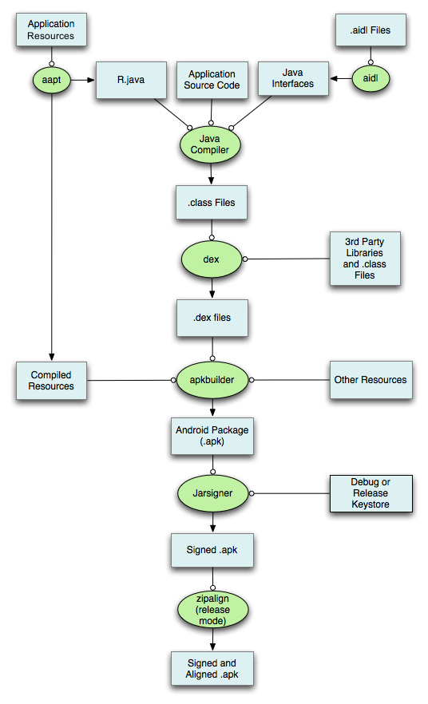
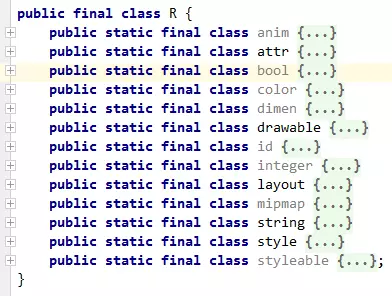
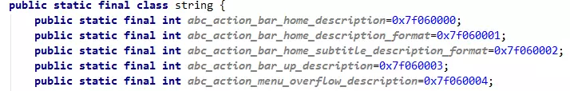
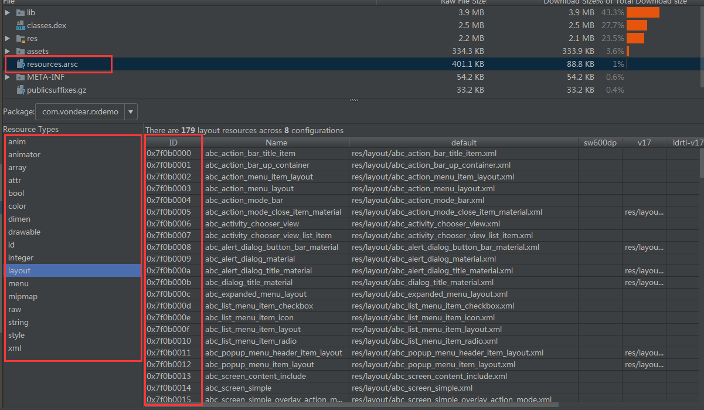
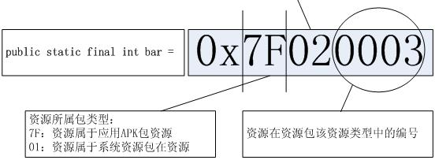

首先来一张官网给的图

然后在来一张build流程图

打包过程中使用的工具
| 名称 | 功能介绍 | 在操作系统中的路径 | 源码路径 |
|---|---|---|---|
| aapt（Android Asset Package Tool） | Android资源打包工具 | ${ANDROID_SDK_HOME} /build-tools/ ANDROID_VERSION/aapt | frameworks\base\tools\aap |
| aidl（android interface definition language） | Android接口描述语言，将aidl转化为.java文件的工具 | ${ANDROID_SDK_HOME}/build-tools/ ANDROID_VERSION/aidl | frameworks\base\tools\aidl |
| javac | Java Compiler | ${JDK_HOME}/javac或/usr/bin/javac | |
| dex | 转化.class文件为Davik VM能识别的.dex文件 | ${ANDROID_SDK_HOME}/build-tools/ ANDROID_VERSION/dx | |
| apkbuilder | 生成apk包 | ${ANDROID_SDK_HOME}/tools/ apkbuilder | sdk\sdkmanager\libs\sdklib\ src\com\android\sdklib\build\ ApkBuilderMain.java |
| jarsigner | .jar文件的签名工具 | ${JDK_HOME}/jarsigner或/usr/bin/jarsigner | |
| zipalign | 字节码对齐工具 | ${ANDROID_SDK_HOME}/tools /zipalign |
编译打包步骤：
1. aapt打包资源文件
在这个过程中，项目中的AndroidManifest.xml文件和布局文件XML都会编译，然后生成相应的R.java，另外AndroidManifest.xml会被aapt编译成二进制。
存放在APP的res目录下的资源，该类资源在APP打包前大多会被编译，变成二进制文件，并会为每个该类文件赋予一个resource id。对于该类资源的访问，应用层代码则是通过resource id进行访问的。Android应用在编译过程中aapt工具会对资源文件进行编译，并生成一个resource.arsc文件，resource.arsc文件相当于一个文件索引表，记录了很多跟资源相关的信息。
res常用目录下有9中目录：
–animator。这类资源以XML文件保存在res/animator目录下，用来描述属性动画。
–anim。这类资源以XML文件保存在res/anim目录下，用来描述补间动画。
–color。这类资源以XML文件保存在res/color目录下，用描述对象颜色状态选择子。
–drawable。这类资源以XML或者Bitmap文件保存在res/drawable目录下，用来描述可绘制对象。例如，我们可以在里面放置一些图片（.png, .9.png, .jpg, .gif），来作为程序界面视图的背景图。注意，保存在这个目录中的Bitmap文件在打包的过程中，可能会被优化的。例如，一个不需要多于256色的真彩色PNG文件可能会被转换成一个只有8位调色板的PNG面板，这样就可以无损地压缩图片，以减少图片所占用的内存资源。
–layout。这类资源以XML文件保存在res/layout目录下，用来描述应用程序界面布局。
–menu。这类资源以XML文件保存在res/menu目录下，用来描述应用程序菜单。
–raw。这类资源以任意格式的文件保存在res/raw目录下，它们和assets类资源一样，都是原装不动地打包在apk文件中的，不过它们会被赋予资源ID，这样我们就可以在程序中通过ID来访问它们。
–values。这类资源以XML文件保存在res/values目录下，用来描述一些简单值，例如，数组、颜色、尺寸、字符串和样式值等，一般来说，这六种不同的值分别保存在名称为arrays.xml、colors.xml、dimens.xml、strings.xml和styles.xml文件中。
–xml。这类资源以XML文件保存在res/xml目录下，一般就是用来描述应用程序的配置信息。
生成的R文件结构如下：

比如字符串：

resources.arsc文件：
resources.arsc这个文件记录了所有的应用程序资源目录的信息，包括每一个资源名称、类型、值、ID以及所配置的维度信息。我们可以将这个resources.arsc文件想象成是一个资源索引表，这个资源索引表在给定资源ID和设备配置信息的情况下，能够在应用程序的资源目录中快速地找到最匹配的资源。
其实resources.arsc是按照对应打包格式封装合成的一个文件，该文件中对应的结构如图：

解析出来就是对应的17个目录由ID的0x7fyyxxxx中的yy表示。

2. 处理aidl文件，生成相应的Java文件
aidl工具解析接口定义文件然后生成相应的Java代码接口供程序调用。如果在项目没有使用到aidl文件，则可以跳过这一步。
3. 编译项目源代码，生成class文件
项目中所有的Java代码，包括R.java和*.aidl文件，都会变Java编译器（javac）编译成.class*文件，生成的class文件位于工程中的bin/classes目录下。
4. 转换所有的class文件，生成classes.dex文件
任何第三方的libraries和*.class文件都会被转换成.dex*文件。dx工具的主要工作是将Java字节码转成成Dalvik字节码、压缩常量池、消除冗余信息等。
5. 打包生成APK文件
所有没有编译的资源，如images、assets目录下资源（该类文件是一些原始文件，APP打包时并不会对其进行编译，而是直接打包到APP中，对于这一类资源文件的访问，应用层代码需要通过文件名对其进行访问）；编译过的资源和*.dex文件都会被apkbuilder工具打包到最终的.apk*文件中。
打包的工具apkbuilder位于 android-sdk/tools目录下。apkbuilder为一个脚本文件，实际调用的是（E:\Documents\Android\sdk\tools\lib）文件中的com.android.sdklib.build.ApkbuilderMain类。
6. 对APK文件进行签名
一旦APK文件生成，它必须被签名才能被安装在设备上。
在开发过程中，主要用到的就是两种签名的keystore。一种是用于调试的debug.keystore，它主要用于调试，在Eclipse或者Android Studio中直接run以后跑在手机上的就是使用的debug.keystore。
另一种就是用于发布正式版本的keystore。
7. 对签名后的APK文件进行对齐处理
如果你发布的apk是正式版的话，就必须对APK进行对齐处理
对齐的主要过程是将APK包中所有的资源文件距离文件起始偏移为4字节整数倍，这样通过内存映射访问apk文件时的速度会更快。对齐的作用就是减少运行时内存的使用。